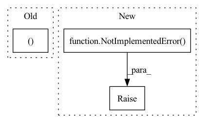

Pattern ID :2555
Before Change
self.n_nodes = x.shape[0]
if self.msg_kind == "gin":
if self.id_scope == "global":
identifiers_ii, identifiers = self.central_node_id_encoder(identifiers,
self.n_nodes)
else:
identifiers_ii, identifiers = self.central_node_id_encoder(identifiers, After Change
out = self.update_fn(torch.cat((x, self.propagate(edge_index=edge_index, x=x, identifiers=identifiers)), -1))
else:
raise NotImplementedError( "Message kind {} is not currently supported.".format(self.msg_kind))
return out
In pattern: SUPERPATTERN
Frequency: 4
Non-data size: 3
Instances Fragment ID: 8352607
Project Name: gbouritsas/graph-substructure-networks
Commit Name: ed60a983109f14b742d533b0d86fff9840a61c82
Time: 2020-10-30
Author: ffrasca@twitter.com
File Name: graph_filters/GSN_sparse.py
M Class Name: GSN_sparse
N Class Name: GSN_sparse
M Method Name: forward(3)
N Method Name: forward(3)
M Parent Class: nn.Module
N Parent Class: nn.Module
M File Name: graph_filters/GSN_sparse.py
N File Name: graph_filters/GSN_sparse.py
M Start Line: 107
M End Line: 114
N Start Line: 102
N End Line: 117
Before Change
// out = F.silu(out.transpose(-1, -2) + residual)
out = out.transpose(-1, -2) + residual
return out, None // empty state
def _get_input_buffer(self, state: Optional[Dict[str, Dict[str, Optional[torch.Tensor]]]]) -> Dict[str, Optional[torch.Tensor]]:
result = self.get_state(state, "ema_state")After Change
// assert not self.bidirectional or state is None, "Bidirectional EMA does not support incremental state"
if state is not None:
raise NotImplementedError(
"MultiHeadEMA module does not support state passing in this repository."
"Use S4D for more functionality such as state passing and better performance."
)
else:
k = self.kernel(L) // (H L)
l_fft = L
s = 0 Fragment ID: 8352606
Project Name: hazyresearch/state-spaces
Commit Name: b766e8779997046a5b3bad674e89625e8963b0d2
Time: 2022-11-18
Author: albertfgu@gmail.com
File Name: src/models/sequence/ss/ema.py
M Class Name: MultiHeadEMA
N Class Name: MultiHeadEMA
M Method Name: forward(4)
N Method Name: forward(4)
M Parent Class: nn.Module
N Parent Class: nn.Module
M File Name: src/models/sequence/ss/ema.py
N File Name: src/models/sequence/ss/ema.py
M Start Line: 166
M End Line: 223
N Start Line: 112
N End Line: 158
Before Change
attention_mask = ~(new_input_ids == self.tokenizer.pad_token_id)
assert new_input_ids.shape == embeddings.shape[0:2]
return new_input_ids, self.model(
inputs_embeds=embeddings,
attention_mask=attention_mask,
)
def pre_epoch(self) -> None:
return
After Change
input_ids: torch.Tensor,
prefix_ids: Optional[torch.Tensor],
) -> Tuple[torch.Tensor, torch.Tensor]:
raise NotImplementedError()
def pre_epoch(self) -> None:
return
Fragment ID: 8352605
Project Name: csinva/imodelsx
Commit Name: 2146a56d4f9731bddbc01e4a9309cff248e6285b
Time: 2023-02-07
Author: jxmorris12@gmail.com
File Name: imodelsx/iprompt/utils.py
M Class Name: PrefixModel
N Class Name: PrefixModel
M Method Name: forward(3)
N Method Name: forward(3)
M Parent Class: nn.Module,abc.ABC
N Parent Class: nn.Module,abc.ABC
M File Name: imodelsx/iprompt/utils.py
N File Name: imodelsx/iprompt/utils.py
M Start Line: 236
M End Line: 247
N Start Line: 246
N End Line: 246
Before Change
return (sigmas ** 2 + self.sigma_data ** 2) * (sigmas * self.sigma_data) ** -2
def forward(self, x: Tensor, noise: Tensor = None, **kwargs) -> Tensor:
batch, device = x.shape[0], x.device
// Sample amount of noise to add for each batch element
sigmas = self.sigma_distribution(num_samples=batch, device=device)
sigmas_padded = rearrange(sigmas, "b -> b 1 1")After Change
raise NotImplementedError("Diffusion class missing denoise_fn")
def forward(self, x: Tensor, noise: Tensor = None, **kwargs) -> Tensor:
raise NotImplementedError( "Diffusion class missing forward function")
class VDiffusion(Diffusion):
def __init__(self, net: nn.Module, *, sigma_distribution: Distribution): Fragment ID: 8352611
Project Name: archinetai/audio-diffusion-pytorch
Commit Name: 68da808cd7e5acb5c571cf14ccefecb3ddceec5b
Time: 2022-10-08
Author: flavio.schneider.97@gmail.com
File Name: audio_diffusion_pytorch/diffusion.py
M Class Name: Diffusion
N Class Name: Diffusion
M Method Name: forward(3)
N Method Name: forward(3)
M Parent Class: nn.Module
N Parent Class: nn.Module
M File Name: audio_diffusion_pytorch/diffusion.py
N File Name: audio_diffusion_pytorch/diffusion.py
M Start Line: 310
M End Line: 329
N Start Line: 109
N End Line: 109